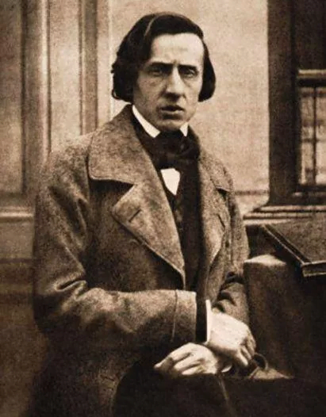

Siglos antes, Platón, el gran filósofo griego, decía que: “La música es un arte educativo por excelencia, se inserta en el alma y la forma en la virtud”
La música polifónica

En los siglos XII y XIII, junto al apogeo de la lírica trovadoresca, la canción popular y la danza, cobra especial importancia el tercer fenómeno relevante de la historia de la música medieval, la polifonía. Y aunque no se convierte en el género dominante, supone un gran avance musical.
La polifonía es el arte de combinar, simultáneamente, los sonidos y las melodías de varias voces e instrumentos para formar un todo armónico. Supone una gran evolución frente a la música monódica.
No se conoce con certeza cuándo se produjo el nacimiento de la polifonía pues, aunque los primeros testimonios escritos datan del siglo IX, se cree que ya existía en las sociedades primitivas. Basándose en ellos y en su desarrollo posterior, se suelen distinguir tres grandes periódos en la polifonía medieval: la polifonía primitiva (s. IX-XI), el Ars Antiqua (s. XII-XIII) y el Ars Nova (s. XIV).
El "Pequeño Chopin"

Sin duda, Frédéric Chopin (1810-1849) es uno de los más importantes y populares representantes del movimiento romántico musical. Además de excelente compositor, fue un consumado pianista. Chopin nació en la localidad polaca de Zelazowa Wola y creció en un ambiente culto en el que la música ocupaba un lugar importante. Sus padres pronto descubrieron las extraordinarias cualidades musicales del pequeño Frédéric, que con tan solo seis años inició los estudios de música y con siete publicó su primera composición y comenzó su carrera como concertista de piano.
Tras su primer concierto público, en el palacio de la familia Radziwill, su fama se extendió por los ambientes musicales de Varsovia, donde se le conocía como el "pequeño Chopin". Compaginó sus estudios formales en el Liceo de Varsovia con los de música y completó estos en el Conservatorio, obteniendo excelentes resultados. Sus profesores decían de él que era un genio de la música y que tenía un talento sorprendente.
Antes de cumplir los veinte años la fama de Chopin como compositor y pianista ya se habían extendido por los círculos musicales europeos. Su primer éxito apoteósico fuera de su patria lo obtuvo en 1829 en Viena, ciudad a la que acudió invitado para dar dos conciertos. Después de trabajar en varias ciudades, regresó por un tiempo muy breve a Varsovi y allí se enamoró de una joven estudiante de canto. Ese primer amor, vivido con toda la pasión y el desgarro de un espíritu romántico, le inspiró varias composiciones magníficas, entre ellas, sus primeros nocturnos. Pero su deseo era continuar su exitosa carrera musical fuera de Polonia, que además estaba viviendo unos momentos políticos muy complicados. Así que Chopin emprendió viaje por Europa que le llevó primero a Viena y más tarde a París, donde se afincó definitivamente y donde compuso hasta su muerte.
La ópera, reina del Barroco

El Barroco alumbró el nacimiento de tres nuevas formas de música vocal: la ópera, el oratorio y la cantata, todas originadas en Italia. Pero de las tres, fue la ópera la que se convirtió en el género barroco por excelencia.
otra forma musical supo expresar como la ópera el espíritu barroco por excelencia. Esta forma de música profana reunía la exaltación de los sentimientos, los temas vitales que a todos interesaban -el amor, la vida y la muerte-, y una expresividad que era llevada a sus más elevadas cotas a través del uso de todos los recursos musicales a su alcance, como modulaciones, disonancias o cromatismos.
Aunque antes de siglo XVIII ya se habían probado otras fórmulas para combinar música, danzas y escenas teatrales, como el drama litúrgico o las comedias madrigalescas, no fue hasta el nacimiento de la ópera, con su estilo recitativo, cuando se consolidó este nuevo género de teatro lírico.
En la ciudad de Florencia, a finales del siglo XVI, un conjunto de artistas (músicos, poetas e intelectuales) bajo el mecenazgo del conde Bardi crearon un grupo, conocido como Camareta Fiorentina, cuyo interés era discutir sobre las artes y guiar las tendencias a seguir. En lo que se refiere a la música, pensaban que había que buscar un camino que hiciera que esta recuperase su capacidad para emocionar y conmover al oyente, una capacidad qu creían que se había perdido con la polifonía renacentista. Su investigación les llevó a retomar las raíces de la música y el teatro griego y a concluir que la monodia con un acompañamiento instrumental eran la base de la "nueva música", de un nuevo estilo que debería combinar música, teatro, poesía y danza. Y surgió la ópera.